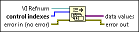

Get Control Values by Index Function
Owning Palette: Application Control VIs and Functions
Requires: Base Development System
Gets values from the controls for the VI you reference. This function offers better performance than VI Server objects that read from the terminal of a front panel control, such as using the Value property in the Control class. However, this function requires more advanced application design than other methods for getting control values.

 Add to the block diagram Add to the block diagram |
 Find on the palette Find on the palette |